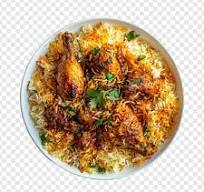

Mandhi

Mandhi is a traditional Omani dish that consists of rice, meat, and spices.
It is a flavorful and aromatic meal that is popular in Oman and the broader Gulf region.
Ingredients:
- Chicken or lamb
- Rice
- Onion and garlic
- Spices (cumin, coriander, cardamom)
steps
- Cook the meat with onion and garlic until browned.
- Add the spices and cook for another minute.
- Stir in the rice and cook for a few more minutes.
- Add water or broth and bring to a boil.
- Reduce heat and simmer until the rice is cooked and the flavors are well combined.
Back to Main Page